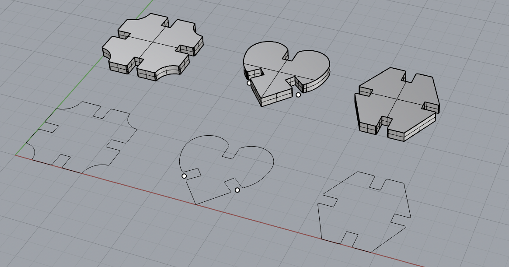
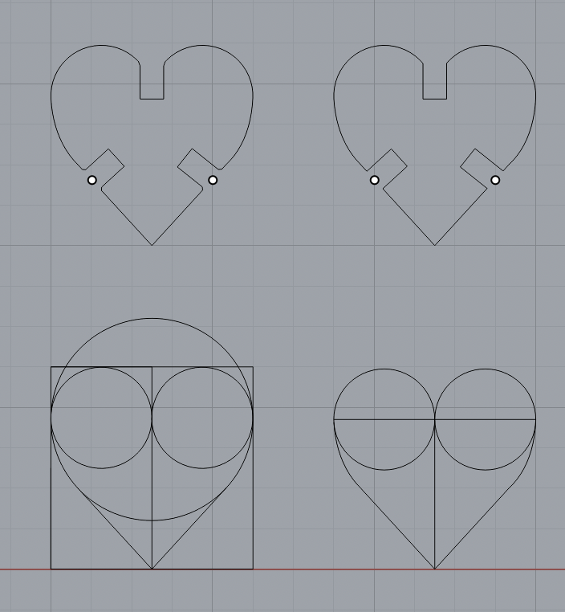
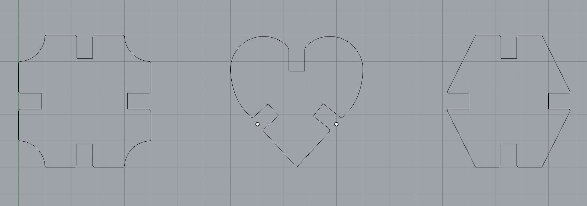

by Alexa Schlein for HCDE 533, October 2022
I'm still in progress of cutting my kit, so finished kit pic TBD! For now, here is a picture of the 3D model.
Luckily, I'm not a novice when it comes to using a laser cutter. Actually, I'm guilty of hogging a laser cutter when I was in undergrad for several hours to rasterize guitar sheet music into wood for a present. But, anyway, this was my first time using Rhino to design parts to be laser cut from cardboard. I initially wanted to make something really cool, like a geodesic dome kit (example). But, I wasn't able to spend time on campus this week to do some rapid prototyping iterations, so I went with a simpler design of three components: a square, a heart, and a hexagon. I just picked these shapes randomly. Well, I thought a heart was interesting. But, they can be stuck together to form abstract shapes.
I made 2D drawings for each shape. Each component fits within a 1.5x1.5 in square. To make the square more interesting, I cut away the corners using arcs. I drew the heart using three circles and tangent lines. I drew the hexagon using line segments. I added chamfers on the slots to aid in insertion. Some images of my drawings:
 To figure out the right dimensions for the extrusion, I took several measurements and found the average of the cardboard thickness: 0.148 +/- 0.012 in. I used the Join and ExtrudeCrv commands to create the 3D extruded components, 0.148 in in thickness. See my models below!
A link to my Rhino file can be found here.
I'm going to do a slot size test to determine the right size for the press fit, by creating test slots that differed by a thou, ranging from 0.145 in to 0.150 in. The best sized slot for my cardboard for a press fit is X in. [insert pic of slot test]. So, I'll back to Rhino and add the right sized slots to my components: 0.22xX in.
I exported my drawing from Rhino to an AI file. I copied each shape in Adobe Illustrator so that I had 10 of each, and arranged them for cutting. For now, I have a demo AI file that is 28x40 in that shows what my file would look like for laser cutting.
Using the Epilog M2 [32/40] laser cutter in The Mill, I'll cut out my components using the following settings: X power, Y speed, and Z frequency. Notes on cutting to be inserted when completed.
If there is an issue accessing these files, please see this Google Drive folder.
Rhino Model Adobe Illustrator file - Test (To be updated)Junchao and the staff at The Mill were helpful in completing this assignment!